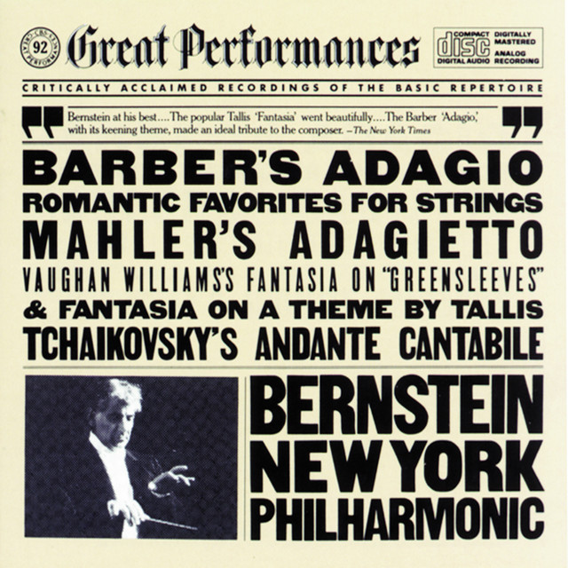

A. Elementos constitutivos de las personas como seres humanos y la música
Ficha Técnica A: Canon en Re Mayor de Johann Pachelbel
- Compositor: Johann Pachelbel
- Año de composición: alrededor de 1680
- Instrumentación: Música de cámara
- Descripción: El Canon en Re Mayor es una de las obras más conocidas de Pachelbel. Su estructura armónica y melódica ha sido estudiada y apreciada por generaciones, mostrando la capacidad de la música para expresar emociones profundas y complejas.
B. Naturaleza humana: ¿somos buenos o malos por naturaleza y la música?
Ficha Técnica B: Sinfonía No. 5 de Ludwig van Beethoven
- Compositor: Ludwig van Beethoven
- Año de composición: 1808
- Instrumentación: Orquesta
- Descripción: La Sinfonía No. 5 de Beethoven es una obra icónica que ha sido interpretada como un ejemplo de lucha y superación. Su famoso motivo rítmico en el primer movimiento ha sido interpretado como un símbolo de la lucha contra la adversidad, mostrando cómo la música puede reflejar aspectos profundos de la naturaleza humana.
C. Tipos de amor y la música
Ficha Técnica C: "Perfect" de Ed Sheeran
- Artista: Ed Sheeran
- Año de lanzamiento: 2017
- Género: Pop
- Descripción: "Perfect" es una canción que habla sobre el amor romántico, mostrando cómo la música contemporánea sigue explorando y expresando diferentes tipos de amor a lo largo de los años.
D. Elementos del entorno que nos impresionan o emocionan y la música

Ficha Técnica D: "Adagio for Strings" de Samuel Barber
- Compositor: Samuel Barber
- Año de composición: 1936
- Instrumentación: Orquesta
- Descripción: "Adagio for Strings" es una obra con una profunda carga emocional. Ha sido utilizada en diversos contextos, desde funerales hasta películas, mostrando cómo la música puede impresionarnos y emocionarnos a través de sus melodías y armonías.
E. Facultades que reciben impresiones o emociones estéticas y artísticas y la música
Ficha Técnica E: "Clair de Lune" de Claude Debussy
- Compositor: Claude Debussy
- Año de composición: 1890
- Instrumentación: Piano
- Descripción: "Clair de Lune" es una pieza que ha sido apreciada por su belleza y delicadeza. Su uso de armonías sutiles y melancólicas muestra cómo la música puede estimular nuestras facultades para recibir impresiones estéticas y emociones artísticas.
F. Clasificación de elementos del contexto que provocan impresiones o emociones artísticas y la música
Ficha Técnica F: "Bohemian Rhapsody" de Queen
- Artista: Queen
- Año de lanzamiento: 1975
- Género: Rock
- Descripción: "Bohemian Rhapsody" es una canción que desafía las convenciones musicales, combinando diferentes estilos y secciones para crear una experiencia única. Su impacto muestra cómo la música puede ser clasificada de diversas formas según los elementos que la componen.
G. Predominio y emergencia de manifestaciones artísticas y la música
Ficha Técnica G: "Like a Rolling Stone" de Bob Dylan
- Artista: Bob Dylan
- Año de lanzamiento: 1965
- Género: Folk rock
- Descripción: "Like a Rolling Stone" es una canción que marcó un cambio en la música popular, mostrando cómo ciertas manifestaciones artísticas pueden predominar y emerger en la cultura debido a su impacto y relevancia en su época.
Ficha Técnica H: "Imagine" de John Lennon
- Artista: John Lennon
- Año de lanzamiento: 1971
- Género: Pop
- Descripción: "Imagine" es una canción que aboga por la paz y la unidad entre los seres humanos, mostrando cómo las expresiones artísticas pueden ser manifestaciones innatas de la naturaleza humana en su búsqueda de un mundo mejor.
Hecho por:
Castro Molina Luis Ángel
Félix Aguilasocho Nicolás
Guerrero Parra Kenia Patricia
Revilla Gaxiola Ángel Eduardo